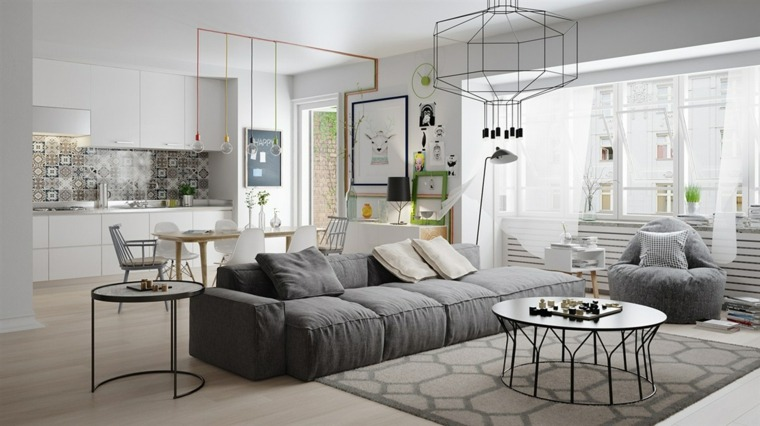
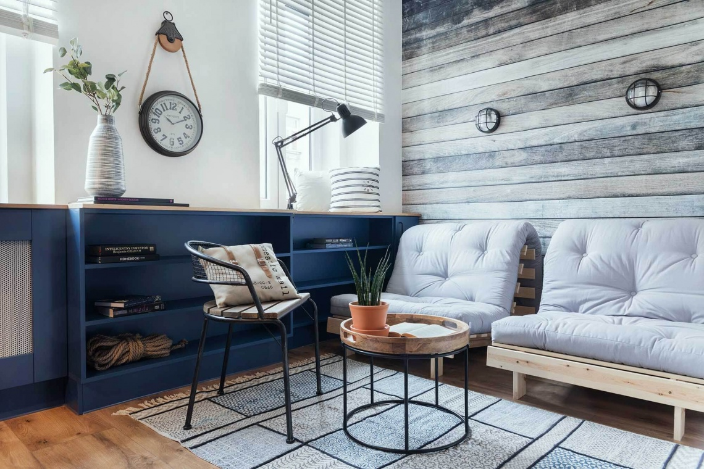
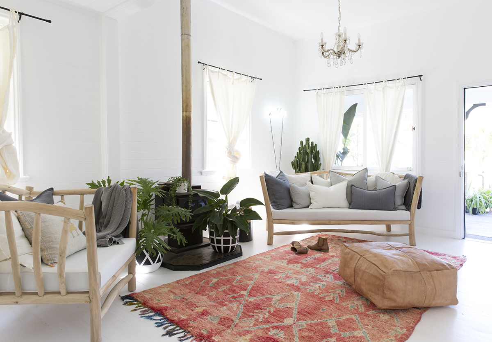
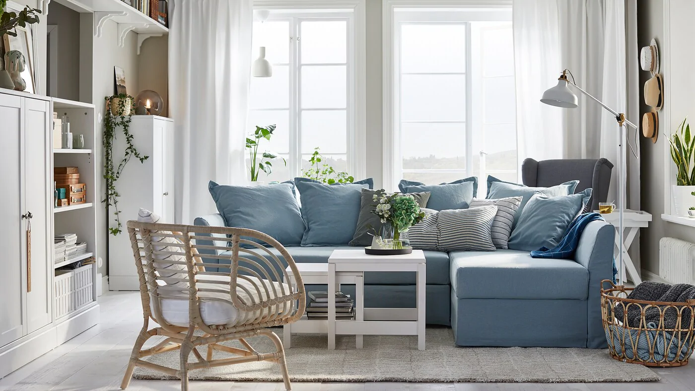
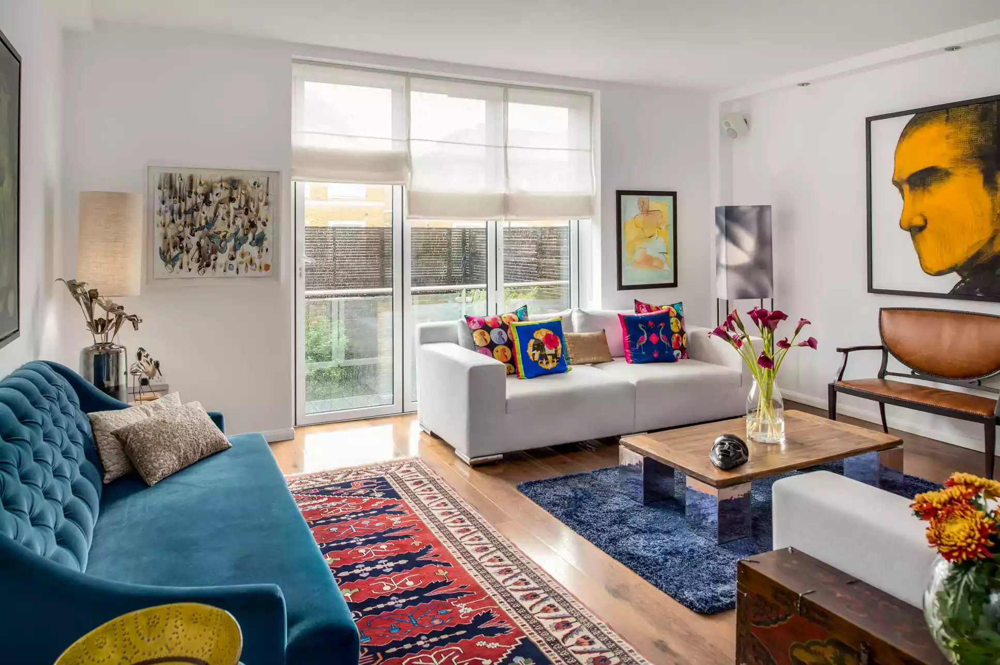
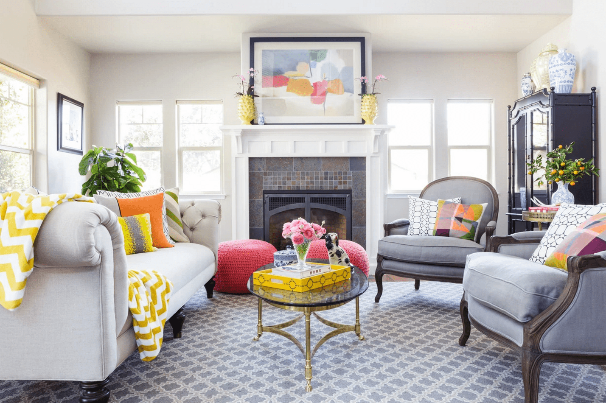

Sala de estar
La sala de estar es uno de los lugares en el que mas recuerdos se crean, por eso:
La sala de estar es un lugar de relax para toda la familia, por lo que es importante que satisfaga las expectativas de todos. Pero el diseño debe ser coherente, por lo que elegir el estilo principal para el diseño del salón es el primer paso.
Al decidirse por un estilo concreto, se limitan las posibilidades de elección, lo que facilita mucho el diseño de la sala de estar. De este modo, ya tiene especificados los siguientes elementos:
-la paleta de colores.
-el diseño de los muebles.
-el tipo de acabado (madera, metal, hormigón, tejidos).
-el tipo de accesorios.
Recuerda que no debes forzar nada. Tal vez debas elegir el minimalismo y enriquecerlo con adornos y accesorios interesantes. Además, puedes hacerlo por un precio bajo. Un salón gris es una opción perfecta para los propietarios indecisos o las personas que aún no han desarrollado su propio estilo. Te da muchas posibilidades.
EJEMPLOS:


La sala de estar es un lugar de descanso, por lo que debe ayudar a relajarse. No es posible si el interior está lleno de colores y carece de armonía. Sin embargo, esto no significa que el interior tenga que ser aburrido. Un fondo neutro es perfecto para varias decoraciones. En esta fase, puedes aportar colores y conseguir grandes resultados.
Las decoraciones de pared son elementos especialmente populares. Puedes elegir, por ejemplo:
-Fotos.
-Carteles.
-Espejos.
-Fotos enmarcadas.
Si no te gusta la decoración de las paredes, puedes elegir una alfombra o unas cortinas interesantes para tu salón. Son elementos probados que pueden cambiar completamente el aspecto del interior.
